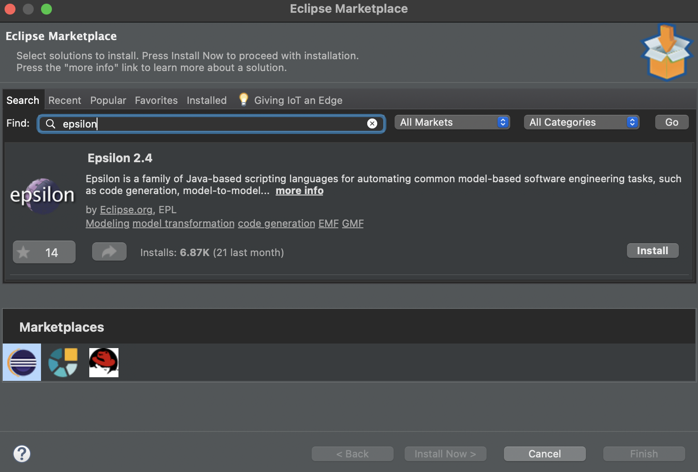

Eclipse Epsilon
Epsilon is a family of scripting languages and tools for automating common model-based software engineering tasks such as code generation, model-to-model transformation, model validation and model visualisation, that work out of the box with EMF, UML, Simulink, XML and other types of models.
Epsilon can be used as a standard Java library, and also provides Apache Ant tasks that can be embedded in Maven/Gradle builds. Editing support for Epsilon programs is available in Eclipse, VS Code and Sublime.
Installation
Method 1: (Eclipse Marketplace - Recommended)
The best and quickest way to install the latest version of Epsilon is through the Eclipse Marketplace. To do this head over to Help → Eclipse Marketplace

Method 2: (Update Sites)
You can also use one of the following update sites through the Help → Install new software menu in Eclipse to install (parts of) Epsilon. Enter one of the links below in the Work with: field and tick all the options (Epsilon Core artifact is required). Then click Next → Finish to install Epsilon on your Eclipse platform.
| Site | Location |
|---|---|
| Stable (recommended) | http://download.eclipse.org/epsilon/updates/2.4/ |
| Interim | http://download.eclipse.org/epsilon/interim/ |

Method 3: (Eclipse Marketplace website)
Another way is to head over to the Eclipse Marketplace site. Drag and drop the install button into your Eclipse IDE and finish the installation.